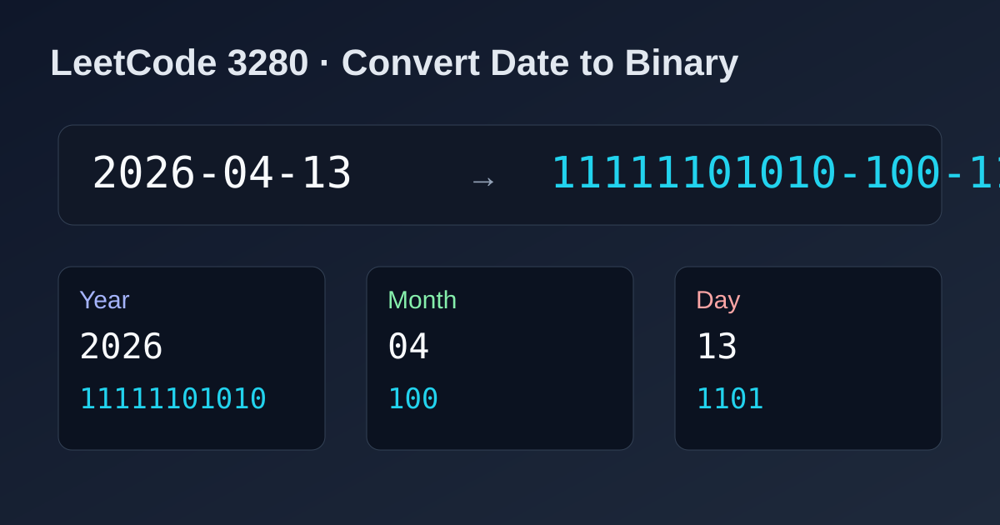

LeetCode 3280: Convert Date to Binary (Split + Base Conversion)
LeetCode 3280StringSimulationToday we solve LeetCode 3280 - Convert Date to Binary.
Source: https://leetcode.com/problems/convert-date-to-binary/

English
Problem Summary
Given a date string in yyyy-mm-dd, convert year, month, and day separately to binary (without leading zeros), then join them back with hyphens.
Key Insight
The format is fixed, so the simplest approach is: split by '-', parse each part to integer, convert integer to binary, and concatenate with '-'.
Algorithm
- Split date by hyphen into three parts.
- Convert each part string to integer.
- Convert integer to binary string without leading zeros.
- Return binYear + "-" + binMonth + "-" + binDay.
Complexity Analysis
Time: O(1) (fixed-size input).
Space: O(1) excluding output string.
Common Pitfalls
- Keeping leading zeros from original month/day (not allowed in result).
- Treating the full date as one number instead of 3 independent segments.
- Forgetting to preserve the hyphen separators in output.
Reference Implementations (Java / Go / C++ / Python / JavaScript)
class Solution {
public String convertDateToBinary(String date) {
String[] parts = date.split("-");
String year = Integer.toBinaryString(Integer.parseInt(parts[0]));
String month = Integer.toBinaryString(Integer.parseInt(parts[1]));
String day = Integer.toBinaryString(Integer.parseInt(parts[2]));
return year + "-" + month + "-" + day;
}
}func convertDateToBinary(date string) string {
parts := strings.Split(date, "-")
y, _ := strconv.Atoi(parts[0])
m, _ := strconv.Atoi(parts[1])
d, _ := strconv.Atoi(parts[2])
return strconv.FormatInt(int64(y), 2) + "-" + strconv.FormatInt(int64(m), 2) + "-" + strconv.FormatInt(int64(d), 2)
}class Solution {
public:
string convertDateToBinary(string date) {
stringstream ss(date);
string y, m, d;
getline(ss, y, '-');
getline(ss, m, '-');
getline(ss, d, '-');
return bitset<32>(stoi(y)).to_string().substr(bitset<32>(stoi(y)).to_string().find('1')) + "-" +
bitset<32>(stoi(m)).to_string().substr(bitset<32>(stoi(m)).to_string().find('1')) + "-" +
bitset<32>(stoi(d)).to_string().substr(bitset<32>(stoi(d)).to_string().find('1'));
}
};class Solution:
def convertDateToBinary(self, date: str) -> str:
y, m, d = date.split("-")
return f"{int(y):b}-{int(m):b}-{int(d):b}"var convertDateToBinary = function(date) {
const [y, m, d] = date.split("-").map(Number);
return y.toString(2) + "-" + m.toString(2) + "-" + d.toString(2);
};中文
题目概述
给定一个 yyyy-mm-dd 格式的日期字符串。把年、月、日分别转换为不带前导零的二进制表示，再按 year-month-day 形式拼接返回。
核心思路
日期格式固定，直接按 - 切成三段，分别做“字符串转整数 + 整数转二进制”即可。
算法步骤
- 使用 split('-') 切分为年、月、日。
- 每段转换为整数。
- 将整数转换为二进制字符串（不保留前导零）。
- 用连字符拼接三段结果并返回。
复杂度分析
时间复杂度：O(1)（输入长度固定）。
空间复杂度：O(1)（不计输出字符串）。
常见陷阱
- 误把原始月/日的前导零保留在结果中。
- 把整个日期当作一个整体数值去转换。
- 输出时漏掉分隔符 -。
多语言参考实现（Java / Go / C++ / Python / JavaScript）
class Solution {
public String convertDateToBinary(String date) {
String[] parts = date.split("-");
String year = Integer.toBinaryString(Integer.parseInt(parts[0]));
String month = Integer.toBinaryString(Integer.parseInt(parts[1]));
String day = Integer.toBinaryString(Integer.parseInt(parts[2]));
return year + "-" + month + "-" + day;
}
}func convertDateToBinary(date string) string {
parts := strings.Split(date, "-")
y, _ := strconv.Atoi(parts[0])
m, _ := strconv.Atoi(parts[1])
d, _ := strconv.Atoi(parts[2])
return strconv.FormatInt(int64(y), 2) + "-" + strconv.FormatInt(int64(m), 2) + "-" + strconv.FormatInt(int64(d), 2)
}class Solution {
public:
string convertDateToBinary(string date) {
stringstream ss(date);
string y, m, d;
getline(ss, y, '-');
getline(ss, m, '-');
getline(ss, d, '-');
auto toBin = [](int x) {
string s;
while (x > 0) {
s.push_back(char('0' + (x & 1)));
x >>= 1;
}
reverse(s.begin(), s.end());
return s.empty() ? string("0") : s;
};
return toBin(stoi(y)) + "-" + toBin(stoi(m)) + "-" + toBin(stoi(d));
}
};class Solution:
def convertDateToBinary(self, date: str) -> str:
y, m, d = date.split("-")
return f"{int(y):b}-{int(m):b}-{int(d):b}"var convertDateToBinary = function(date) {
const [y, m, d] = date.split("-").map(Number);
return y.toString(2) + "-" + m.toString(2) + "-" + d.toString(2);
};
Comments